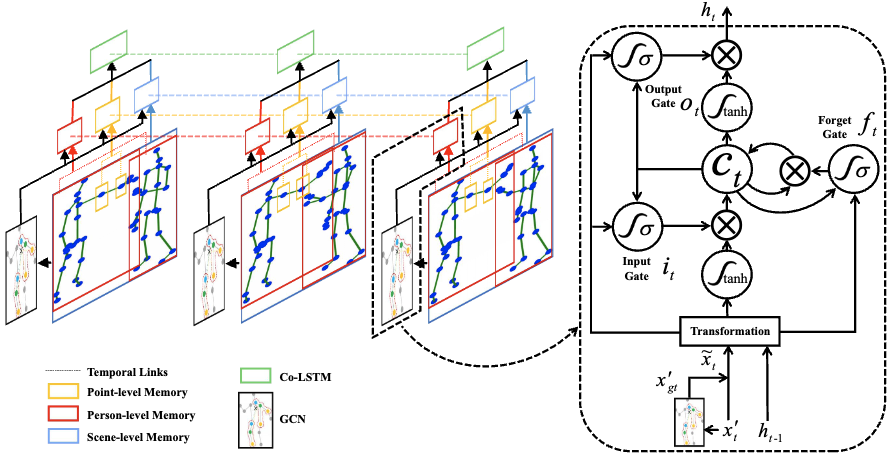

Haocong Rao
PhD Candidate, AISG PhD Fellow
LILY Research Centre, Nanyang Technological University
![Email icon]()
![Google Scholar icon]()
![Github icon]()
![ResearcgGate icon]()
About me
I am Haocong Rao (饶浩聪), a final-year PhD candidate supported by AI Singapore (AISG) PhD Fellowship and supervised by Prof. Chunyan (FIEEE, Fellow of the Academy of Engineering Singapore) and Prof. Cyril Leung (Fellow of the Engineering Institute of Canada), at the LILY Research Centre and College of Computing and Data Science (CCDS), Nanyang Technological University (NTU), Singapore. My broad research interests include Skeleton-Based Person Re-Identification (SRID), 3D Signal Processing, Self-Supervised/Unsupervised learning, Interdisciplinary AI (e.g., LLMs Application, AI for Healthcare).
Prior to joining NTU, I was a research assistant at the Shenzhen Institutes of Advanced Technology (SIAT), Chinese Academy of Science, where my supervisors and academic mentors were Prof. Xiping Hu, Prof. Jun Cheng, Prof. Bin Hu, and Prof. Victor C.M. Leung (FIEEE, FRSC, FEIC, FCAE). I obtained my B.Eng. degree with Outstanding Thesis Award from South China University of Technology (SCUT).
News
Selective Articles [Google Scholar] [ResearchGate]
|
A Survey of Artificial Intelligence in Gait-Based Neurodegenerative Disease Diagnosis By Haocong Rao, Minlin Zeng, Xuejiao Zhao, Chunyan Miao Arxiv Preprint [Link] [PDF] [Resources] |
|
A Survey on 3D Skeleton Based Person Re-Identification: Approaches, Designs, Challenges, and Future Directions By Haocong Rao, Chunyan Miao Arxiv Preprint [First SRID Survey] [Link] [PDF] [Resources] |
|
Hierarchical Skeleton Meta-Prototype Contrastive Learning with Hard Skeleton Mining for Unsupervised Person Re-Identification By Haocong Rao, Cyril Leung, Chunyan Miao International Journal of Computer Vision (IJCV) 2023 [IF: 19.5] [First SRID Article in IJCV] [Link] [PDF] [Code] [Data] |
|
Can ChatGPT Assess Human Personalities? A General Evaluation Framework By Haocong Rao, Cyril Leung, Chunyan Miao 2023 Conference on Empirical Methods in Natural Language Processing, EMNLP 2023 (Findings) [Link] [PDF] [Code] |
|
TranSG: Transformer-Based Skeleton Graph Prototype Contrastive Learning with Structure-Trajectory Prompted Reconstruction for Person Re-Identification By Haocong Rao, Chunyan Miao IEEE/CVF Conference on Computer Vision and Pattern Recognition, CVPR 2023 [First SRID Paper in CVPR] [Link] [PDF] [Code] [Data] |

|
Revisiting k-Reciprocal Distance Re-ranking for Skeleton-Based Person Re-Identification By Haocong Rao, Yuan Li, Chunyan Miao IEEE Signal Processing Letters 2022 [IF: 3.9] [Link] [PDF] |
|
SimMC: Simple Masked Contrastive Learning of Skeleton Representations for Unsupervised Person Re-Identification By Haocong Rao, Chunyan Miao 31st International Joint Conference on Artificial Intelligence, IJCAI 2022 (Oral, Acceptance Rate: 14.9%) [Link] [PDF] [Code] [Data] |
|
Skeleton Prototype Contrastive Learning with Multi-Level Graph Relation Modeling for Unsupervised Person Re-Identification By Haocong Rao, Chunyan Miao Arxiv Preprint (Extension of IJCAI 2021 Paper) [Link] [PDF] [Code] [Data] |
|
SM-SGE: A Self-Supervised Multi-Scale Skeleton Graph Encoding Framework for Person Re-Identification By Haocong Rao, Xiping Hu, Jun Cheng, Bin Hu 29th ACM International Conference on Multimedia, ACMMM 2021 [First SRID Paper in ACMMM] [Link] [PDF] [Code] [Data] |
|
A Self-Supervised Gait Encoding Approach with Locality-Awareness for 3D Skeleton Based Person Re-Identification By Haocong Rao*, Siqi Wang*, Xiping Hu, Mingkui Tan, Yi Guo, Jun Cheng, Xinwang Liu, Bin Hu (* Co-First Author) IEEE Transactions on Pattern Analysis and Machine Intelligence (TPAMI) 2021 [IF: 24.3] (Extension of IJCAI 2020 Paper) [First SRID Article in TPAMI] (TPAMI Featured Article, ESI Highly Cited Paper) [Link] [PDF] [Code] [Data] |

|
Multi-level Graph Encoding with Structural-Collaborative Relation Learning for Skeleton-Based Person Re-Identification By Haocong Rao, Shihao Xu, Xiping Hu, Jun Cheng, Bin Hu 30th International Joint Conference on Artificial Intelligence, IJCAI 2021 (Oral, Acceptance Rate: 13.9%) [Link] [PDF] [Code] [Data] |

|
Augmented Skeleton Based Contrastive Action Learning with Momentum LSTM for Unsupervised Action Recognition By Haocong Rao*, Shihao Xu*, Xiping Hu, Jun Cheng, Bin Hu (* Co-First Author) Information Sciences 2021 [IF: 8.5] [Link] [PDF] [Code] [Data] |
|
Internet of Things Enabled Data Fusion Method for Sleep Healthcare Applications By Fan Yang, Qilu Wu, Xiping Hu, Jiancong Ye, Yuting Yang, Haocong Rao, Rong Ma, Bin Hu IEEE Internet of Things Journal (IoTJ) 2021 [IF: 10.2] [Link] [PDF] |
|
Prototypical Contrast and Reverse Prediction: Unsupervised Skeleton Based Action Recognition By Shihao Xu, Haocong Rao, Xiping Hu, Jun Cheng, Bin Hu IEEE Transactions on Multimedia (TMM) 2021 [IF: 8.2] [Link] [PDF] [Code] [Data] |
|  |
Attention based Multi-level Co-occurrence Graph Convolutional LSTM for 3D Action Recognition By Shihao Xu*, Haocong Rao*, Xiping Hu, Jun Cheng, Bin Hu (* Co-First Author) IEEE Internet of Things Journal (IoTJ) 2020 [IF: 9.5] [Link] [PDF] [Code] |
|
Self-Supervised Gait Encoding with Locality-Aware Attention for Person Re-Identification By Haocong Rao*, Siqi Wang*, Xiping Hu, Mingkui Tan, Huang Da, Jun Cheng, Bin Hu. (* Co-First Author) 29th International Joint Conference on Artificial Intelligence, IJCAI 2020 (Oral, Acceptance Rate: 12.6%) [First SRID Paper in IJCAI] [Link] [PDF] [Code] [Data] |
Professional Services & Teaching
Selective Projects & Awards & Honors
The developed 4D Depth Video Based Gait Recognition & Emotion Prediction System and the Swarm Intelligence Computing and Multi-Sensor Based Sleep Monitoring System have been applied to various universities and hospitals with more than 10,000 clinical experiments, including: State Key Laboratory of Cognitive Neuroscience and Learning of Beijing Normal University, Peking University Sixth Hospital, the Second Xiangya Hospital, Shenzhen People’s Hospital, etc.
Invited Talks
Leadership Experiences
|
PhD Student Lecture Series (SLS): CCDS (SCSE) PhD Students, AI Singapore (AISG) PhD Fellows Graduate Chat Series: NTU CCDS (SCSE) Outstanding PhD Thesis Awardees Invited Talk Series: NTU Predidential Postdoctoral Fellows, NTU Nanyang Assistant Professors, etc. |
|
|
Personal Interests
Military Chess (A Chinese cooperative and tactical game)：My most playing chess game during my high school.
Billiards, Archery, Rock Climbing, Texas Hold'em